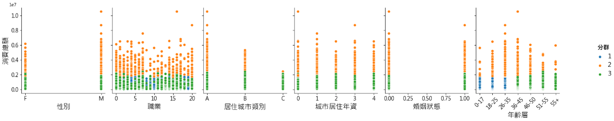
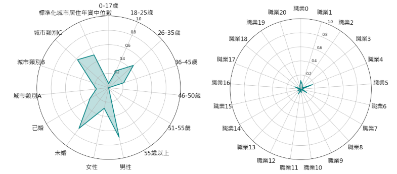
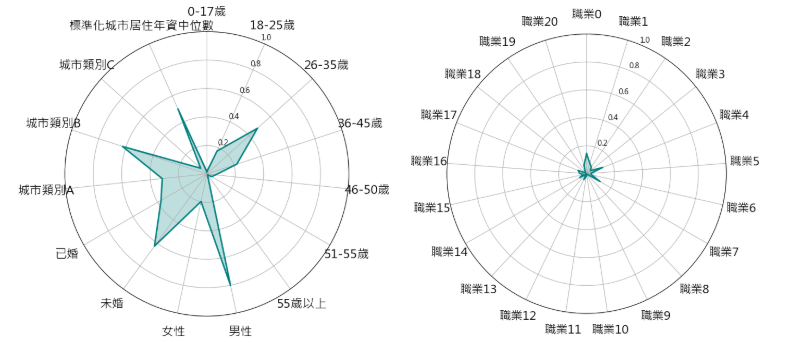
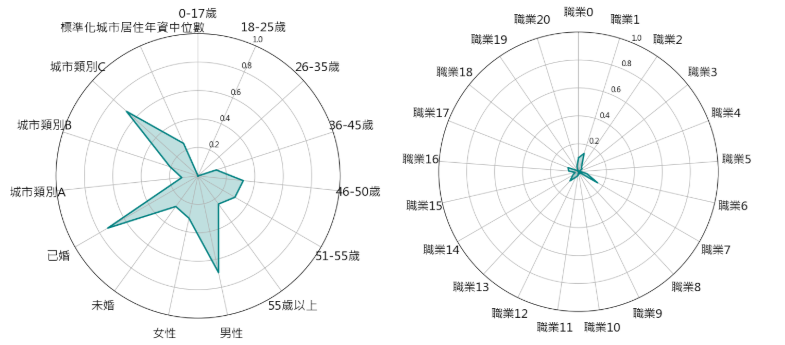
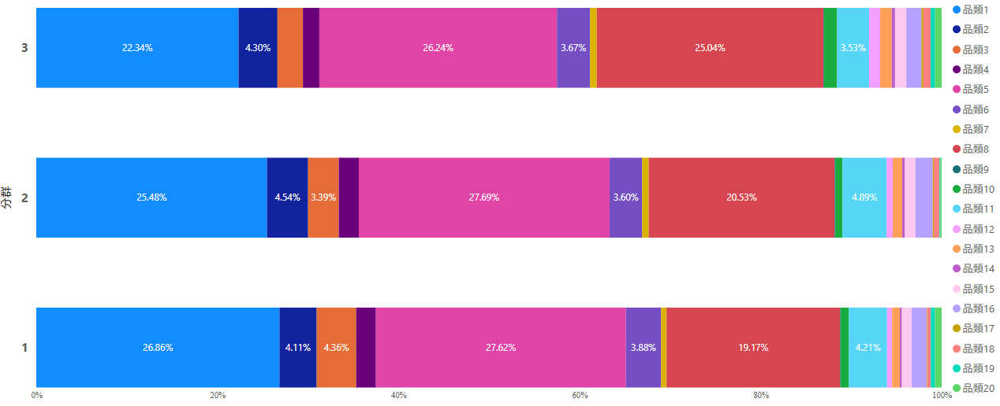
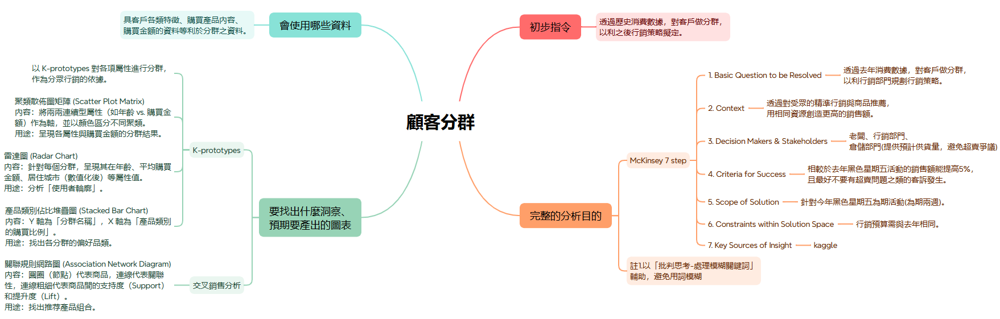

緣起
在《商業周刊》對精誠資訊的分析報導中，資深協理李健龍指出，
企業主如今期待 IT 部門不僅提升效率，也能協助開拓市場，甚至間接創造營收；既然涉及成本投入，便需評估 ROI（投資報酬率）。
因此，本專案聚焦於「提升營收」，以提高行銷策略精準度為目標，模擬實務情境，建立並整理數據分析模板。
模擬商業需求情境：
本分析以某零售公司的黑色星期五活動為應用場景，透過辨識不同客群特性，優化行銷策略，進而提升今年黑色星期五活動銷售額。
資料獲取與準備
資料來源
本資料集下載自 Kaggle，來源為零售公司 ABC Private Limited。
內容為 2022 年黑色星期五期間，高銷量產品的顧客購買彙總數據。
該公司蒐集此資料，旨在分析顧客對不同產品類別的購買行為（特別是購買金額），
並建立模型預測消費金額，以利提供個人化優惠。
資料集中的每筆資料包含以下屬性：
| 屬性名稱 | 說明 |
|---|---|
| User_ID | 使用者 ID。 |
| Product_ID | 購買商品之商品 ID。 |
| Gender | 使用者性別。 |
| Age | 使用者年齡，已預先分成0-17、18-25、26-35、36-45、46-50、51-55、55+這七個區間。 |
| Occupation | 使用者職業，未顯示職業名稱，已把職業名稱轉換成職業代碼。 |
| City_Category | 居住城市類別，有分成A、B、C三個類別。 |
| Stay_In_Current_City_Years | 在目前城市居住的年數，連續數字。 |
| Marital_Status | 婚姻狀況，0代表未婚，1代表己婚。 |
| Product_Category_1 | 購買之商品品類，未顯示原始商品品類，已把原始內容轉換成代碼。 |
| Product_Category_2 | 商品也可能從屬的其他品類，未顯示品類名稱，已把原始內容轉換成代碼。 |
| Product_Category_3 | 商品也可能從屬的其他品類，未顯示品類名稱，已把原始內容轉換成代碼。 |
| Purchase_Amount | 單筆購買金額。 |
資料預處理
基本預處理
| 簡稱 | 操作說明 |
|---|---|
| 資料型態處理 | 將屬於類型屬性但匯入資料時資料型態轉換為數值的屬性，型態均轉換為文字。 |
| 缺失值處理 | 把「產品也可能從屬的其他類別」的缺失值替代為「類別不明」。 |
| 數值尺度標準化 | 為避免分群結果被平均數值過大的數值屬性主導，將數值屬性統一尺度，轉換成Z分數。 |
因應圖表需求的預處理
| 圖表或分析 | 操作說明 |
|---|---|
| K-prototypes分群 |
|
圖表與分析結果
K-prototypes分析
為落實分眾行銷，以 K-prototypes 對資料進行分群。
分析聚焦於消費者特質(性別、年齡、職業、居住城市類別、城市居住年資、婚姻狀況)及代表消費力等級的消費總金額，數值特質均有轉換成 Z分數。
需注意的是，各產品類別的購買數量等行為屬性並未計入分群基準。
分群結果

圖一、分群散點圖矩陣
從圖一、分群散點圖矩陣中，可歸納出以下趨勢：
- 消費分界點： 以 200 萬為界，可明顯區分高消費族群與一般消費族群。
- 核心貢獻區： 高消費族群集中於 26-45 歲，且多分布於職業編號 0-7、14-17 與 20； A類與B類城市 則展現出更高的消費天花板。
- 居住年資洞察： 居住於城市約 1 年的居民消費密度最高，顯示該群體正處於「購置期」或「生活重組期」，消費動能強勁。
使用者輪廓分析
雷達圖說明
資料處理
雷達圖各屬性值係採 K-prototypes 分群後之代表值。
為統一尺度（0-1），數值屬性經中位數標準化處理，公式如下：
分析邏輯
雖然原始中位數較直觀，但為了跨群比較市場覆蓋率（如：圖形互補代表市場開發全面；圖形相似則代表尚有未開發空間），
雷達圖仍統一採用標準化數值。在標示分群特徵時，會再標示出原始中位數，以兼顧易讀性與比較性。
分群特徵摘要
以下彙整各分群雷達圖之核心特徵與詳細數據：
分群1：穩健小資族群

圖二、雷達圖-分群1
核心描述：消費波動最窄，表現最為穩定且平均。
消費力： 總額中位數 437,092（區間：49,288 – 1,848,731）
客群畫像： 男性為主，年齡介於 26-35 歲，多為未婚。
地域分佈： 集中於C類城市，城市居住年資中位數為 2 年。
職業背景： 以職業 4 佔比最高，職業 0 次之
年齡層佔比：
| 0-17歲 | 18-25歲 | 26-35歲 | 36-45歲 | 46-50歲 | 51-55歲 | 55歲以上 |
|---|---|---|---|---|---|---|
| 5.75% | 25.91% | 46.42% | 21.92% | 0.00% | 0.00% | 0.00% |
性別佔比：
| 男性 | 女性 |
|---|---|
| 70.67% | 29.33% |
婚姻狀況佔比：
| 未婚 | 已婚 |
|---|---|
| 70.08% | 29.92% |
居住城市類型佔比：
| A類城市 | B類城市 | C類城市 |
|---|---|---|
| 17.12% | 24.61% | 58.27% |
職業佔比：
| 職業0 | 職業1 | 職業2 | 職業3 | 職業4 | 職業5 | 職業6 |
|---|---|---|---|---|---|---|
| 11.76% | 6.93% | 4.18% | 2.58% | 17.65% | 1.88% | 2.95% |
| 職業7 | 職業8 | 職業9 | 職業10 | 職業11 | 職業12 | 職業13 |
| 9.54% | 0.31% | 1.57% | 5.08% | 1.91% | 7.72% | 0.11% |
| 職業14 | 職業15 | 職業16 | 職業17 | 職業18 | 職業19 | 職業20 |
| 5.02% | 2.27% | 2.50% | 8.90% | 1.09% | 1.43% | 4.60% |
分群2：高消費大戶族群

圖三、雷達圖-分群2
核心描述：消費力極高，且存在千萬級距的超級大戶。
消費力： 總額中位數 2,422,692（區間：1,438,113- 10,536,909）
客群畫像： 男性為主，年齡介於 26-35 歲，多為未婚。
地域分佈： 集中於城市 B，城市居住年資中位數為 2 年。
職業背景： 以職業 0佔比最高，職業 4 次之。
年齡層佔比：
| 0-17歲 | 18-25歲 | 26-35歲 | 36-45歲 | 46-50歲 | 51-55歲 | 55歲以上 |
|---|---|---|---|---|---|---|
| 1.56% | 17.55% | 47.96% | 22.12% | 6.25% | 3.85% | 0.72% |
性別佔比：
| 男性 | 女性 |
|---|---|
| 80.17% | 19.83% |
婚姻狀況佔比：
| 未婚 | 已婚 |
|---|---|
| 62.74% | 37.26% |
居住城市類型佔比：
| A類城市 | B類城市 | C類城市 |
|---|---|---|
| 31.61% | 62.50% | 5.89% |
職業佔比：
| 職業0 | 職業1 | 職業2 | 職業3 | 職業4 | 職業5 | 職業6 |
|---|---|---|---|---|---|---|
| 14.42% | 7.81% | 6.01% | 3.49% | 12.38% | 3.00% | 3.85% |
| 職業7 | 職業8 | 職業9 | 職業10 | 職業11 | 職業12 | 職業13 |
| 11.18% | 0.24% | 0.84% | 1.08% | 2.04% | 4.57% | 0.36% |
| 職業14 | 職業15 | 職業16 | 職業17 | 職業18 | 職業19 | 職業20 |
| 5.65% | 2.64% | 5.05% | 6.49% | 0.84% | 1.68% | 6.37% |
分群3：高潛力族群

圖四、雷達圖-分群2
核心描述：中位數雖低，但上限高，隱藏許多高消費潛力客。
消費力： 總額中位數 387,760（區間：46,681- 2,404,672）
客群畫像： 男性為主，年齡介於 46-50歲或51-55 歲，多為已婚。
地域分佈： 集中於C類城市，城市居住年資中位數為 1年。
年齡層佔比：
| 0-17歲 | 18-25歲 | 26-35歲 | 36-45歲 | 46-50歲 | 51-55歲 | 55歲以上 |
|---|---|---|---|---|---|---|
| 0.00% | 0.00% | 0.00% | 13.50% | 32.02% | 30.01% | 24.47% |
性別佔比：
| 男性 | 女性 |
|---|---|
| 69.52% | 30.48% |
婚姻狀況佔比：
| 未婚 | 已婚 |
|---|---|
| 26.60% | 73.40% |
居住城市類型佔比：
| A類城市 | B類城市 | C類城市 |
|---|---|---|
| 11.50% | 20.72% | 67.78% |
職業佔比：
| 職業0 | 職業1 | 職業2 | 職業3 | 職業4 | 職業5 | 職業6 |
|---|---|---|---|---|---|---|
| 9.96% | 13.70% | 3.81% | 3.28% | 0.53% | 1.27% | 6.08% |
| 職業7 | 職業8 | 職業9 | 職業10 | 職業11 | 職業12 | 職業13 |
| 15.78% | 0.27% | 1.67% | 0.13% | 2.87% | 4.21% | 8.89% |
| 職業14 | 職業15 | 職業16 | 職業17 | 職業18 | 職業19 | 職業20 |
| 4.55% | 2.47% | 6.95% | 8.02% | 1.40% | 0.40% | 3.74% |
分群綜合分析
1.市場覆蓋率分析
透過各分群特徵觀察，整體市場呈現以下動態：
年齡與婚姻： 分群 1、2 鎖定 26-35 歲未婚族群；分群 3 則成功覆蓋 46-55 歲的高齡已婚市場。兩者在人生階段上形成良好的互補。
性別： 三個分群皆顯著偏重男性，女性佔比普遍偏低。
地域： 分群 1、3 以 C 類城市為重心，分群 2 則成功滲透 B 類城市。
職業： 分群 1、2 分佈相似，分群 3 較為獨特；整體職業分佈破碎，無顯著集中的單一職業。
【市場缺口】 目前 0-17 歲、女性、職業 (8-13, 18-19) 及 A 類城市 尚未被有效覆蓋。
2.未開發市場策略建議
針對上述缺口，建議採取以下行動：
藍海市場（0-17 歲、女性）： 目前客戶數較少，可能與商品吸引力有關，建議先進行產品適配性調查，從長計議。
職業行銷（8-13, 18-19）： 為避免資源分散，不建議針對單一職業投放，應尋找這些職業的共同行為特徵進行效率化開發。
A 類城市（頂級市場）： A 類城市雖消費天花板最高，但在高消費群（分群 2）中佔比反倒不高。這顯示該市場已趨於成熟且分層明確，建議針對該區採「高端會員維護」與「精準定向經營」，而非大規模擴張。
3.消費行為與客群背景洞察
核心客群：分群 1 & 2（主力獲利來源）
族群畫像： 高度重疊，核心為 26-35 歲、未婚、居住約 2 年之男性。
行為特徵： 具備穩定消費習慣，對「黑色星期五」促銷敏感度高，尤其是分群 2 貢獻最為顯著，可以重點促銷。
滲透建議： 雖然職業 0 與職業 4 佔比最高，但兩者加總僅約 27-29%，未過半數。建議酌情投入資源提升滲透率，不宜過度孤注一擲。
潛力客群：分群 3（隱藏高貢獻者）
族群畫像： 集中於 46-55 歲、已婚、居住約 1 年之族群。
消費動能： 雖然中位數較低，但最大消費值遠超分群 1，隱藏許多高潛力客戶。
動機推測： 消費衝動可能來自新家購置或生活重組（新居民）。
行動建議： 應針對其「成家/遷移」的消費誘因投放資源，挖掘並轉化潛在的高消費客群。
分群品類偏好
圖表說明
圖五、品類佔比堆疊圖呈現各分群於「主要產品類別（Product_Category_1）」的購買數量分佈。計算公式如下：
分析結果

圖五、品類佔比堆疊圖
| 分群 | 消費總額 | 購買商品總數 | 件單價 | 消費者數量 | 客單價 | 消費總額中位數 |
|---|---|---|---|---|---|---|
| 分群1 | 2,001,831,117 | 211,063 | 9,484.52 | 3,563 | 561,838.65 | 437,092 |
| 分群2 | 2,281,073,910 | 253,115 | 9,012.01 | 832 | 2,741,675.37 | 2,422,692 |
| 分群3 | 812,907,715 | 85,890 | 9,464.52 | 1,496 | 543,387.51 | 387,760 |
表一、各分群購買資訊(單位USD)
透過圖五、品類佔比堆疊圖，可發現三個分群前七名品類排序如下：
| 分群 | 第一名 | 第二名 | 第三名 | 第四名 | 第五名 | 第六名 | 第七名 |
|---|---|---|---|---|---|---|---|
| 分群1 | 品類5 | 品類1 | 品類8 | 品類3 | 品類11 | 品類2 | 品類6 |
| 分群2 | 品類5 | 品類1 | 品類8 | 品類11 | 品類2 | 品類6 | 品類3 |
| 分群3 | 品類5 | 品類8 | 品類1 | 品類2 | 品類6 | 品類11 | 品類3 |
表二、各分群品類佔比前七名
綜合表一、各分群購買資訊和表二、各分群品類佔比前七名內容，可得出下列洞察：
1. 品類偏好高度一致
由表二可見，儘管排序略有不同，但三個分群的高佔比品類高度相似，顯示其核心需求基本一致。
2. 高消費主因在於「量」而非「價」
觀察表一發現，三群的件單價差異極小；值得注意的是，高消費群（分群 2）的件單價甚至低於分群 1 與 3。然而，分群 2 的客單價與消費總額中位數卻遠超其他族群。這說明分群 2 成為高消費主力的關鍵在於購買數量較多，而非購買高單價商品。
3. 消費心理分析
數據反映出該族群具備「精打細算」的特徵，即便選購高價品也傾向尋求更划算的入手方式，導致平均件單價偏低。
行銷策略建議
針對分群 2，行銷重點不應直接推銷高單價商品，建議採取以下策略以穩固並擴大購買動能：
組合商品（Bundling）： 提供跨品類組合包。
批量折扣（Bulk Discount）： 採取多件優惠策略。
透過滿足其精打細算的心理，在維持現有購買量的基礎上，提升整體營收效益。
附錄
分析架構

圖六、分析架構圖
原計畫開發「交叉銷售分析」模版，惟 Kaggle 資料集多針對單一分析場景設計，鮮少同時包含完整的訂單與客戶主體資料。
常見情況是：訂單資料（如時間、地點、出貨類型）缺乏詳盡的客戶屬性；或客戶資料（如年齡、婚姻狀況）欠缺訂單關聯。
受限於資料結構，本專案最終針對交叉銷售分析開發了一套輔助工具，程式收錄於 etl_showcase 儲存庫中：
market_basket_analysis.ipynb
資料預處理的Excel檔案
為方便瀏覽，本專案已將原始資料與 Power Query 預處理步驟 整合於同一 Excel 檔中。
各項查詢均直接讀取檔內資料來源，您只需下載單一檔案，即可透過 Power Query 查看完整的資料清洗流程。
檔案連結：黑色星期五資料預處理.xlsx
繪圖的Power BI檔案
本 pbix 檔案需讀取「黑色星期五資料預處理.xlsx」作為資料源。
由於 Power BI 預設採絕對路徑，專案已預先建立參數化路徑以模擬相對路徑效果。
下載兩個檔案後，請進入 Power Query 將 Folder_Path 參數更改為 Excel 檔所在的資料夾路徑，即可正常載入所有圖表。
檔案連結：黑色星期五顧客分群.pbix